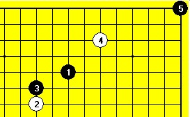
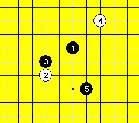
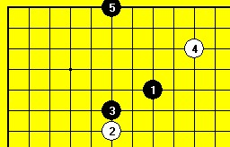
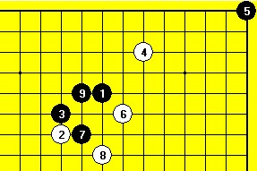
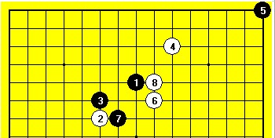
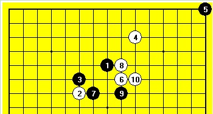
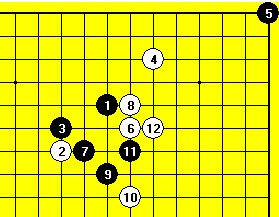
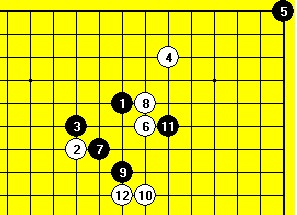
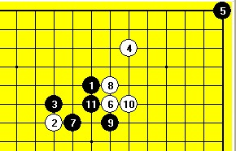

探讨自由行棋规则（下）
#1 探讨自由行棋规则（下）作者：茗弈宽容 发表时间：2010-1-27 12:15:35
周六的探讨随后就变成了实战。洪斌和黄宇峰一组，我则和阿布、张力军、沈大师、小白一组。老顾是两边兼顾。这里主要谈谈和阿布的一局。由于还不太适应这个规则，于是阿布让我先行。双方前5手是这么下的（图1）。白4其实是充分利用规则的考虑。因为执白方在黑5落子后有权提出是否交换，因此白4的一手就显得非常重要了。实战这样的远防，给黑5带来的难度是，棋子的落点不是221个点，还是比较有限的几个点，否则一个不慎，很可能会造成交换以后胜负立判的情况。

图1
见下面的参考图。黑5这样的落点，后行方立刻提出交换，此后白棋基本就可以投降了。

参考图1
针对白4跳防的问题，黑5最好的方法，就是走边线，类似于放弃一手棋（参考图2）。

参考图2
阿布的白6（图2）其实很不错，只是一开始我们双方都忽略了一些变化。黑7是早就想好的一手棋，白8的防御有点不知所云，黑9以后白投了。当时出现戏剧性的一幕，黑9下好以后第一感是觉得黑必胜了。但是之后觉得出问题了，白10要是下在7下面，怎么办？结果是自己居然完全忽略了3-9的活二之存在。

图2
在此后的变招过程中，我们忽然都发现了很强的白8（图3）。由于有了白4的联系，6-8的活二就变得非常有价值了。

图3
黑9单防，白10（图4）是很强的反击手段。粗略扫视了一眼，觉得基本无防了。

图4
这里黑9先活三（图5），黑11再防，也是一样的。

图5
也探讨了这样的变化（图6），黑11这么防御，敌之要点我之要点。但是白12的以静制动，令黑棋彻底崩溃。

图6
最后，也算是一道题目吧，黑11后（图7）白如何胜？

图7
通过实战，大家觉得自由行棋规则确实有许多值得考虑和研究的东西。既要吃透规则，合理运用规则，又要通过实战总结一些棋型变化来提高大家的进一步认识。